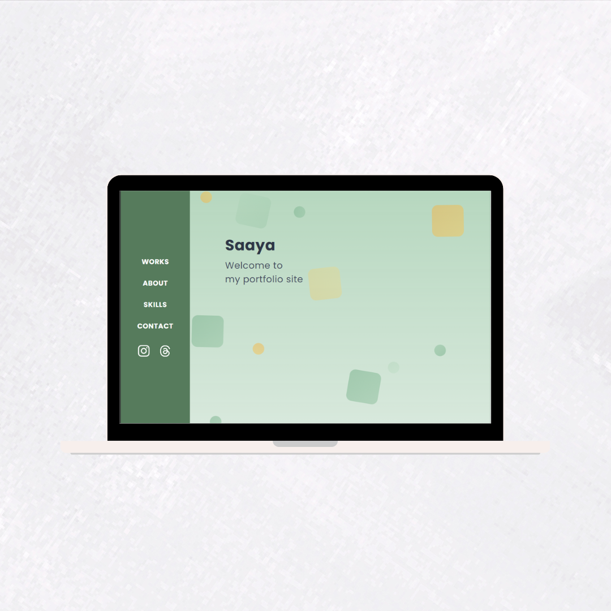

ポートフォリオ
Website

概要
自身の制作物や経歴をまとめたポートフォリオサイトです。
ターゲット
採用担当者やクライアントの方。
目的
自身の制作物やスキルについて整理をし、わかりやすく伝えること。
設計について
「トップページ」と「各作品の詳細ページ」の2ページとなっています。
ターゲットユーザーが最も関心を持つ「どのような作品を作れるのか」という点を重視し、WORKSセクションをKVの直後に配置しました。
視覚的にスキルや制作物の雰囲気が伝わるように設計しています。
また、全体の余白感や可読性にも配慮し、読みやすいデザインを意識しました。
スマートフォンでの閲覧を想定したモバイルファースト設計で、レスポンシブ対応も行っています。
PC版では、ナビゲーションを左側に固定し、主要コンテンツを右側に配置することで、視線移動の負担を減らし、情報を整理された形で届けられるようデザインしました。
担当内容
全ての工程を一人で担当しました。
デザイン/コーディング/構成・設計/テキスト作成/レスポンシブ対応
使用ツール
VSCode/Figma/Git/GitHub Pages
製作期間
2025年7月(3週間)